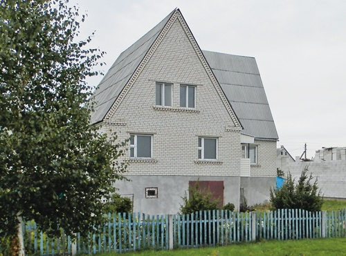

Шиферная крыша

Во время довольно агрессивного захвата рынка зарубежными производителями новых кровельных материалов шифер, как материал дешевый и наиболее распространенный, подвергся активным нападкам, его обвинили во всех смертных грехах, явно намекая на то, что подобному материалу более не место на наших крышах.

Во время довольно агрессивного захвата рынка зарубежными производителями новых кровельных материалов шифер, как материал дешевый и наиболее распространенный, подвергся активным нападкам, его обвинили во всех смертных грехах, явно намекая на то, что подобному материалу более не место на наших крышах.
Действительно, асбест как материал вреден для организма, но не все так плохо, как громко об этом кричат.
Что такое шифер?
Начнем с того, что шифер – это кровельный материал, и делать из него кухонные столы никто не собирается. Нас от него отделяет несколько слоев кровельного ковра, как видим, он не находится в прямом контакте с человеком и навряд ли наносит вред здоровью.
Сам по себе асбест вреден ровно настолько, насколько вредно любое волокно органического и неорганического происхождения. Если мы его съедим, то ничего не произойдет, а вот если изо дня в день будем вдыхать огромное количество длинных и тонких волокон, они скопятся в легких и нанесут вред здоровью, но подобная опасная концентрация возможна только в местах добычи или сухой переработки асбеста, да и там при соблюдении всех норм техники безопасности можно избежать роковых последствий.

Более того, американцы выяснили, что в доме, крытом асбестовым шифером и при строительстве которого использовались иные асбестосодержащие материалы, концентрация пыли менее 0,001 волокна в 1 см3, что в 1000 раз меньше предельного порогового значения.
Именно в Штатах еще в 1991 году судом была отклонена просьба агентства по охране окружающей среды США (АЗОС) о запрете использования асбеста в США, так как доказательная база была несостоятельной.
Асбестосодержащие материалы не в состоянии выделить в атмосферу сколько-нибудь значительное количество волокон, а значит, применять данный материал в строительстве можно, тем более не стоит говорить о каком-то вреде, если речь идет о трубах, которые полностью прячутся под иные материалы.
Виды шиферных кровель
Самыми распространенными вариантами шиферной кровли были и остаются волнистые листы, чтобы добавить им привлекательности, производители начали окрашивать данный материал в различные цвета. Однако в этой области еще не достигнуты высокие результаты. Органические краски оказываются менее долговечными, нежели сам материал, который способен служить 30–40 лет. В настоящее время ведутся работы по созданию неорганических красок, которые будут служить столько же, сколько и сам шифер.
Асбестоцементный волнистый лист – это кровельное покрытие, сделанное из тонкоармированного цементного камня, волокна которого обладают высокой прочностью при растяжении, воспринимают растягивающие напряжения. Такой материал обладает не только высокой механической прочностью, но и другими ценными свойствами: огнестойкостью, малой водопроницаемостью, долговечностью, имеет малую массу, в 2-3 раза дешевле металлической кровли.
Асбестоцементные кровли из волнистых листов обыкновенного профиля устраивают на кровлях с уклоном более 20% (оптимальный уклон крыши?– 20-45°).
Перед тем как приступить к работам, листы сортируют, внимательно осматривают и параллельно заготавливают стальные элементы кровли (карнизы, желоба и т.д.).

Чем же хороша асбестоцементная кровля
Шифер обладает высокими водоотталкивающими свойствами, что является очень важным показателем для кровельного материала. К тому же он стоически выносит воздействие высоких и низких температур, перепады влажности, солнечную радиацию и снеговые нагрузки, при этом вес материала невысокий, что дает возможность монтировать облегченную и разреженную обрешетку.
Асбестоцемент обладает теплоизоляционными свойствами, под ним не конденсируется влага, поэтому нет нужды в пароизоляции. Он эффективно гасит шумы от атмосферных осадков. Асбестоцементный шифер не горит, да и его стоимость можно смело относить к разряду плюсов.
Несложен данный материал и в обработке: его можно пилить и сверлить обычными плотничными инструментами.
Недостатки асбестоцементной кровли
По истечении срока службы асбестоцементная кровля начинает активно разрушаться: теряет свои водозащитные качества, вспучивается, а кромки листов легко выкрашиваются и откалываются (особенно в продольном направлении в асбестоцементных волнистых листах), но подобные явления наблюдаются на крышах, которым по 50 лет.
А вот что действительно является бичом каждой шиферной кровли, так это мох и лишайники, которые охотно селятся с северной стороны дома. Периодически их надо счищать.
Материал обрешетки
Доски и бруски для обрешетки следует брать не ниже второго сорта, ширина – не более 14 см, хорошо высушенные (сырая древесина в процессе высыхания ослабит гвоздевое соединение). Если использовать пиломатериалы шире 14 см, то в конечном итоге они усохнут, покоробятся и повредят кровлю. Также желательно выбрать доски без сучков, они могут сломаться при нагрузке.
Размер бруска обрешетки должен быть сечением 50?50 или 60?60 мм. Обрешетка прибивается к стропилам гвоздями. Раскладывают и крепят бруски обрешетки от карниза к коньку с шагом 530 мм.
Каждый лист шифера должен опираться только на три бруска: по краям и в середине. На таком основании продольная нахлестка листов шифера будет плотной и они прочно уложатся на бруске.
Обрешетку крыши выполняют с таким расчетом, чтобы на нее можно было уложить целое число листов как в продольном, так и в поперечном направлениях. Если это невозможно, в кровлю вводят обрезанные листы, которые в поперечных рядах укладывают предпоследними у фронтонного свеса, а в продольных – у конька.
Использовать обрезанные куски не совсем удобно и рентабельно, куда правильнее просто увеличить (но не более 50 см) или в крайнем случае уменьшить свесы на фронтонах.
Все четные бруски при правильном подходе должны иметь высоту не 60 мм, а 63 мм (в случае 50х50 – высота не 50 мм, а 53 мм). Для однотипности их все же обычно делают одинаковыми, то есть 60х60 мм (или 50х50), но в этом случае четные бруски приподнимают с помощью подкладных планок толщиной 3 мм, уложенных на стропилах. Все эти условия надо соблюсти именно для того, чтобы нахлестка листов была плотной и листы прочно лежали на обрешетке.
Укладываем шиферный лист
Для того чтобы листы легли ровно, надо использовать шнур, натянутый вдоль ската. Горизонтальный нахлест рядов должен быть 140 мм при уклоне до 30-58% и 120 мм при более крутом уклоне, причем желательно учесть направление господствующих ветров в данной местности, чтобы открытые кромки листов были обращены в подветренную сторону.
Покрывать крышу с перекрытием одного листа другим на одну волну (с плотной нахлесткой) асбестоцементных листов можно двумя способами: со смещением листов в каждом последующем ряду и со срезкой примыкающих углов.
По первому способу листы шифера укладывают вразбежку – со смещением продольных кромок листов на одну или несколько волн по отношению к таким же кромкам листов ранее уложенного ряда. В этом случае, чтобы покрыть один скат кровли, скорее всего, придется разрезать вдоль только один лист шифера либо на одну волну, либо весь лист пополам (причем обе части вам понадобятся на следующий скат).
В результате этого исключается нежелательный четырехкратный перехлест листов в местах общих стыков, а сами листы укладываются без щелей.
По второму способу в листах обрезают лишь углы (на одну волну), тогда линия стыковки листов на скате по продольным кромкам будет прямой.
Листами с долевой обрезкой волн рекомендуется покрывать относительно узкие по уклону, но длинные в поперечном направлении скаты. Широкие по уклону, но короткие в поперечном направлении скаты покрывают листами со срезанными углами.
При укладке асбестоцементных листов четыре угла не должны сходиться в одном месте?– это приведет к искривлению листов и неплотному их прилеганию. Снеговая и ветровая нагрузка на листы вызовет их излишнюю деформацию, способствуя развитию трещин. Под неплотные стыки начинает поддувать ветер, занося снег на чердак. В этом случае необходимо подложить под шифер рубероид, что, в свою очередь, вызывает необходимость сплошной обрешетки, и вы получаете более дорогую крышу.
Если все же между листами шифера остались зазоры, превышающие 7 мм, их следует заделать с помощью гидроизоляционной мастики, которую наносят на перекрываемые полосы деревянным шпателем слоем толщиной 5-6 мм, шириной в поперечных соединениях 30-40 мм, а в продольных – 60-70 мм.
Способы крепления шифера к обрешетке
Отверстие для крепления шифера делают на расстоянии 80–100 мм от нижней кромки на гребне волны ручной дрелью (диаметр сверла на 1-2 мм больше диаметра гвоздя). Если не учесть эти пропорции, то при механических и температурных деформациях лист потрескается. При этом используют шаблон, чтобы сверло не соскользнуло. Положение отверстий зависит от интервалов между брусьев обрешетки. Разметку мест будущих отверстий выполняют, когда листы еще находятся в заводской упаковке.
Лист крепят к обрешетке шиферным (либо обычным) гвоздем или шурупами длиной 100 мм с шайбой из металла и прокладкой из резины, толя, рубероида, которую покрывают окрасочным составом (желательно грунтовкой) на натуральной олифе либо мастикой; гвоздь забивают, пока из-под шайбы не выступит остаток краски (не добивая до конца примерно на 2-3 мм).
В отличие от других строительных материалов, шифер не имеет доборных элементов. Поэтому конек в такой кровле защищают кровельной сталью или просто двумя обрезными досками, сбитыми между собой под нужным углом.
Ремонт асбестоцементных кровель
Если вы при обследовании крыши обнаружили сильно поврежденные листы шифера (имеются сколы, трещины) приготовьтесь к тому, что их надо будет заменить. Для этого в продольном направлении с обеих сторон удаляемого листа укрепляют мостики за коньковые скобы. Поперек мостиков укладывают доску. Чтобы освободить поврежденный лист, удаляют гвозди или шурупы, которыми он прикреплен к обрешетке. Выдергивая гвозди, лапу гвоздодера опирают на край ходового мостика или доски. Поврежденный лист вынимают из ряда так, чтобы соседний лист остался на месте. Новый лист укладывают два кровельщика. Один приподнимает ослабленные сбоку и сверху листы, а другой, уложив новый асбестоцементный лист на перекрываемую кромку соседнего, продвигает его в направлении к коньку. Когда нижняя кромка нового листа совпадает с кромкой данного ряда, его крепят к основанию. Мягкие шайбы во всех креплениях смазывают и пришпатлевывают суриковой краской.
Ремонту подлежат и сами асбестовые листы, правда, повреждения не должны быть значительными. Небольшие трещины можно оклеивать толем, подкладочным рубероидом, тканью на мастике, копируя поверхность листа. Оклеивают лист вручную. С помощью кисти на гофры наносят мастику, затем наклеивают ткань, плотно прижимая ее к поверхности листа.
При замене до 10 м2 покрытия из асбестоцементных листов вначале разбирают вышележащее кровельное покрытие, затем извлекают поврежденные листы. Новые листы укладывают на обрешетку снизу вверх, то есть от карниза к коньку с перекрытием нижележащего ряда на 120 мм при уклоне свыше 58% и на 140 мм при меньшем уклоне. Листы крепят к обрешетке одним гвоздем или шурупом, обязательно подкладывая под его головку мягкую шайбу. Листы карнизного ряда крепят дополнительно двумя шурупами.
Окраска асбестоцементной кровли
Крашеные шиферные кровли выглядят вполне респектабельно, да и краска является дополнительной защитой для материала, продлевая ему жизнь, в том числе не позволяя лишайникам и мхам селиться на данном кровельном покрытии. Краска снижает водопоглощение, повышает морозостойкость кровельных материалов и увеличивает срок их службы.
Для окраски асбестоцементной кровли используют атмосферостойкие, влагостойкие и морозостойкие масляные и акрилатные краски и эмали.
Новый шифер перед покраской во избежание появления высолов рекомендуется выдержать при атмосферных условиях в течение 3-4 месяцев.
При покраске старых крыш имеющуюся на них растительность следует удалить механически с помощью металлических щеток или скребков, затем поверхность следует протравить антисептиком и смыть водой.
Прежде чем приступить к покраске, шифер грунтуют и дают составу просохнуть. Это закрепит поверхность и предотвратит в дальнейшем цветовое расслоение.
Асбестоцементные кровли окрашивают маховой кистью или ручником, набирая небольшое количество краски и растушевывая ее вдоль ската. Продолжительность выдержки каждого слоя при температуре воздуха 10-15°С не менее 24-36 ч.
С листами, покрытыми краской, обращаются осторожно, чтобы не повредить отделочный слой. В первые годы эксплуатации дома слой краски после крепления крыши обычно немного стирается. Это особенно заметно тогда, когда с крыши слетает снег, он может иметь оттенок кровельно материала, но в этом нет ничего страшного.
Асбестоцементные листы ни в коем случае не следует пробивать гвоздями. Так вы получите вместо аккуратного отверстия сеть трещин, которые с временем превратятся в стартовые площадки для более серьезных дефектов. Учитывая, что в Беларуси по нескольку раз в год объявляется штормовое предупреждение, шифер необходимо крепить только шурупами и скобами в карнизном ряду.
Источник: журнал «Строим дом» №1, 2013